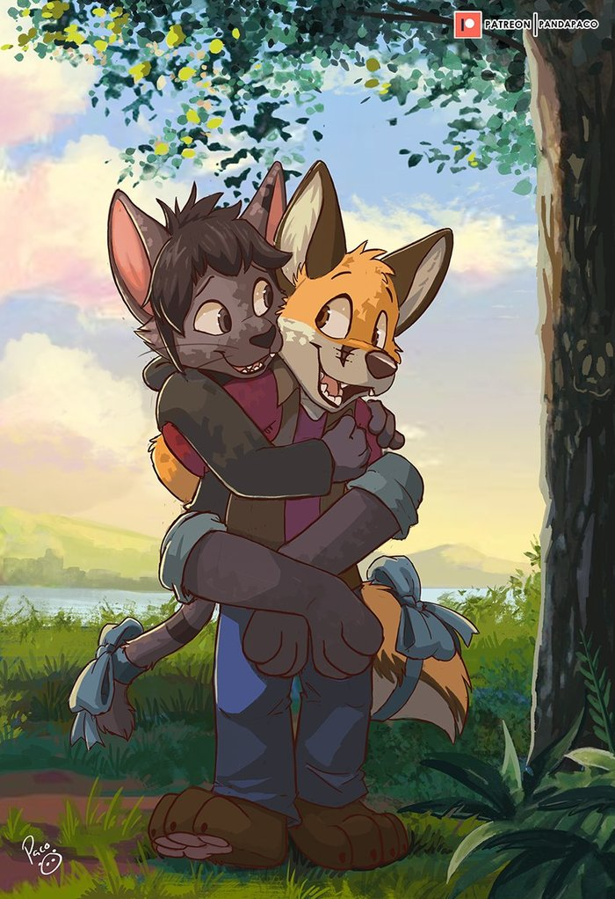
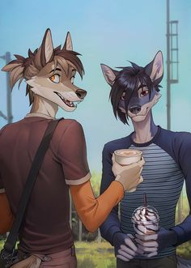
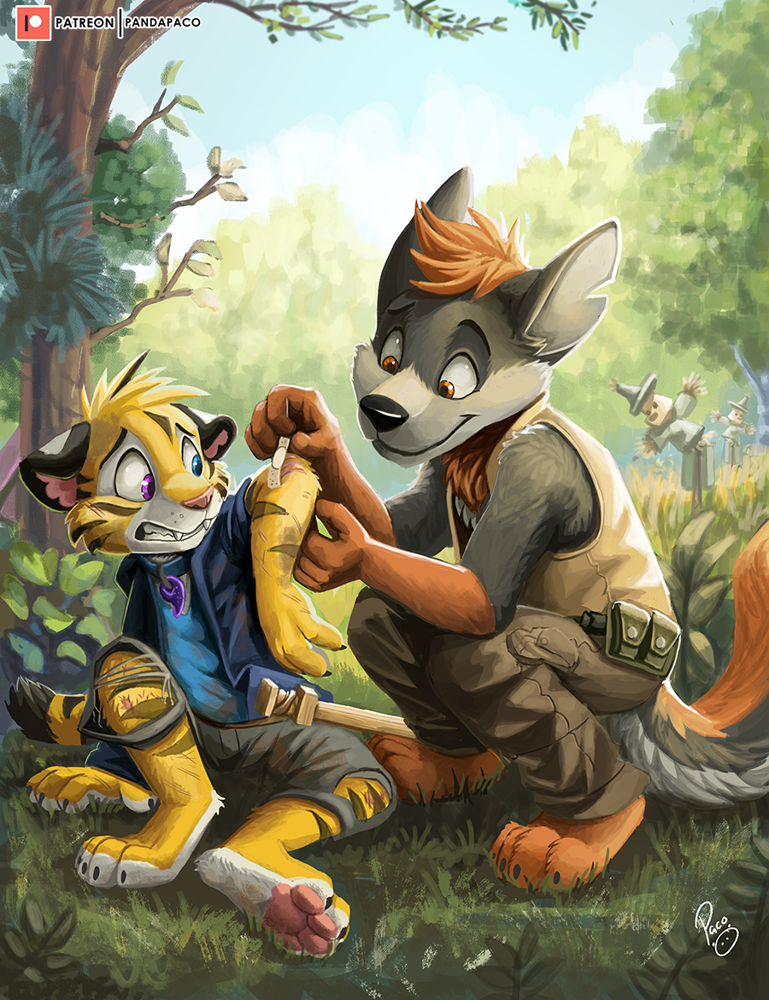
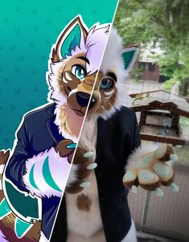

Антропоморфні тварини з'являлися у культурі з давніх часів, коли людині було властиво одухотворювати навколишні явища та живі істоти. Тварини з рисами людей у безлічі зображені в міфології та фольклорі, звідки перейшли в літературу, театральне та образотворче мистецтво. З популяризацією газетних коміксів забавні тварини стали популярним мотивом, і з виникненням мальованої анімації стиль був запозичений великі екрани. Світанок наукової фантастики створив образи тварин серйозних, порушив питання людяності та співіснування з іншими видами. В наш час сюжети з тваринами — звичайна справа в масовій культурі, особливо мальованої та орієнтованої на дітей та підлітків.
Немає певної дати чи випадку, який можна було вважати моментом появи світ фурей. Вважається, що фурі-фендом виділився з любителів наукової фантастики, коміксів та мультфільмів приблизно наприкінці 1983-го – на початку 1984-го років. У міру розвитку інтернету сформувалося фурі-спільнота, спочатку на Заході, а наприкінці 1990-х у Росії та інших країнах з російськомовним населенням. На даний момент фурі зустрічаються майже по всьому світу. Формування жанру та розвиток інтернету сприяло формуванню субкультури та зустрічам між її учасниками. Протягом наступного десятиліття Інтернет увійшов до мас і став найпопулярнішим засобом у соціалізації фурі-шанувальників. Ньюсгрупа alt.fan.furry була створена у листопаді 1990 року. Розраховані на багато користувачів текстові ігри типу «MUCK» також стали популярними місцями для зустрічей і спілкування фурей. Найстаріша з них – FurryMUCK.

На появу фуррів вплинули антропоморфні персонажі та діснеївська анімація, зокрема «Король-лев» (1994), мультфільм, у якому дикі великі котячі були наділені авторами людськими якостями. Також зіграв роль розвиток інтернету, що дозволило фуррам знайти один одного в мережі. Локальне мережеве життя фуррей почалося ще раніше і проходило на серверах кількох американських університетів у мережевому рольовому ігровому чаті, званому FurryMUCK і що веде своє існування з 1990 року, а також інші інтернет-ресурси та веб-форуми.
Кінець 1970-х деякі фуррі-історики розглядають як період, що передував появі фуррі-фендому і що мав вплив на його освіту, саме в цей час у США стали з'являтися спеціалізовані на антропоморфізм «фензини» (малотиражні аматорські видання, що випускаються представниками того чи іншого фендому). Згідно з ілюстратором Октавії Вульф і публіцисту Фреду Паттену, відправною точкою початку формування фуррі-фендом став 1976 рік, разом з виходом фензину «Vootie».

Крім FurryMUCK, до онлайн-ресурсів, що вплинули на розвиток фуррі-фендому, відносять також англомовний Furnation та віртуальний світ Second Life. Прикладом онлайн-ресурсів російськомовних фуррей можна назвати галерею Furnation.ru та форум Yiff.ru.
У 1990-х і 2000-х роках сильний вплив на фуррі-фендом надали відеоігри, перш за все, серії Sonic the Hedgehog і Star Fox, меншою мірою — The Elder Scrolls та деякі інші.
З початку 1980-х років і до появи спеціалізованих фуррі-конвентів (фуррі-конференцій) та інтернету представники фендому зустрічалися на різних фестивалях шанувальників наукової фантастики та фентезі, також характерним для періоду стало видання фензинів з тематичними статтями та коміксами. У 1986 році на щорічному науково-фантастичному конвенті «Westercon» у місті Сакраменто відбулася так звана відкрита «Furry Party» — виставка художніх та літературних фуррі-робіт, з якою пов'язують подальше поширення фуррі по Каліфорнії. В одному із фензинів «Yarf! The Journal of Applied Anthropomorphics» є докладний хронологічний опис життя фуррі-фендом в доінтернетний період. До цього періоду відноситься початок використання терміна «фуррі» для позначення людини з інтересом або симпатією до антропоморфних тварин персонажам.

Зібратися разом на заході, ексклюзивно присвяченому антропоморфним тваринам, фуррі змогли в 1989 році, коли в місті Коста-Меса (штат Каліфорнія) відбулася пробна "Confurence 0". Незабаром відбулася перша європейська фуррі-конференція «Eurofurrence», що пройшла 1995 року в Німеччині, а в 1997 році вже на східному узбережжі США в місті Олбані (штат Нью-Йорк) стартував «Anthrocon» — найбільший і довготривалий щорічний фуррі-конвент у світі . Перший і основний російський фуррі-конвент «Русфуренція» був організований шанувальниками мультфільму «Король-лев» і пройшов у 2001 році в Москві в клубі на Старому Арбаті, але в наступні роки був перенесений до Підмосков'я. У 2007 році у світі вже було приблизно 25 щорічних фурі-конференцій.
У 1990-і роки великі видання почали звертати увагу на фуррі, наприклад однією з перших публікацій є замітка в The New York Times за 27 жовтня 1996 року про кандидата на докторський ступінь, що відвідує «конФУРенції». У ній фуррі були представлені як "зростаюча національна субкультура фурсьют-хобістів", члени якої "використовують інтернет для обміну історіями та рольових ігор з видрами, лисицями та бобрами". До речі, організатор «Anthrocon» це також відомий сучасний дослідник в сфері фармацевтики та органічної хімії — Самуель Конвей, відомий також як «Дядько Каґей».
Перша зустріч фурі в Україні була у 2005 році у місті Львові. Під назвою «LvivFur» проводиться й зараз.
{kind=link}
{kind=link}